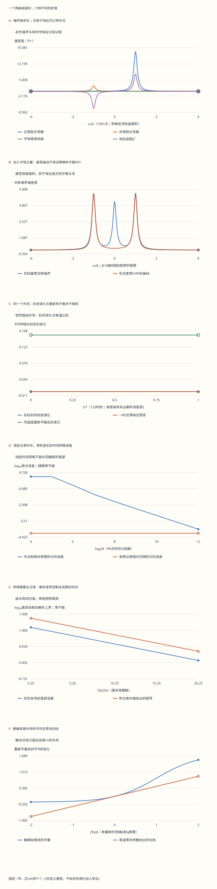

本页目录
基础衔接 04 · 从对易子到响应谱：噪声、吸收与有限时间读数
先修：量子态与密度矩阵、Kubo 与因果输运。本讲始终使用外场项 \(H'=-f(t)B\)、响应方向 \(\delta\langle B\rangle=\chi*f\) 和 Fourier 核 \(e^{+i\omega t}\)。正文先保留 \(\hbar\)，实验取 \(\hbar=1\)。目标：亲自从一个二阶矩阵算出响应，同时区分谱线面积、有限记录和热平衡导数。
1. 先固定问题：我们改变什么，又读取什么
把系统想成一个有上下两级的量子探针。外场不是直接把“响应曲线”推高，而是改变 Hamiltonian；探针随后怎样演化，取决于初态、作用时间以及是否允许它重新与热浴交换能量。先把这些条件写在纸上，公式的符号才有可核查的含义。
取 \(H_0=\Delta\sigma_z/2\)，其中 \(\Delta>0\)，参考态是温度固定的 Gibbs 态，\(\beta=1/(k_BT_{\rm bath})\)。测量算符选为
\(q\) 带有被测量量的单位，\(f\) 的单位是能量除以 \(q\)。倾角 \(\theta\) 改变的是算符方向；它不是温度，也不是本征能隙。\(\theta=\pi/2\) 时外场连接两个能级；\(\theta=0\) 时 \(B\) 与 \(H_0\) 对易。后一个例子会检验我们是否把几种“静态”混在了一起。
写 \(\omega_0=\Delta/\hbar\)、\(r=\tanh(\beta\Delta/2)\)，则 \(p_g=(1+r)/2\)、\(p_e=(1-r)/2\)，参考平均值为 \(\mu_0=-q\cos\theta\,r\)。注意两个不同的量：\(\langle B^2\rangle=q^2\)，而连接方差 \(\langle(B-\mu_0)^2\rangle=q^2-\mu_0^2\)。当均值不为零时，它们不相等。
2. 静态小场给出一个不能回避的符号检验
先设纯横向 \(\theta=\pi/2\)、零温。精确基态能量是 \(E_g(f)=-\sqrt{(\Delta/2)^2+(fq)^2}\)。由于外场项是 \(-fB\)，Hellmann–Feynman 关系给出
因此正小外场必须带来正的平均变化。改写对易子顺序时可以一起改符号，但不能在同一个约定下算出相反的物理方向。
一般倾角、有限温度也能精确算。令 \(h_x=-fq\sin\theta\)、\(h_z=\Delta/2-fq\cos\theta\)、\(h=\sqrt{h_x^2+h_z^2}\)。由于 \((\mathbf h\cdot\boldsymbol\sigma)^2=h^2I\)，有
对零场求导，得到等温静态导数
第一项来自能级本征方向的改变，第二项来自热占据的改变。这里比较的是一系列同温度平衡态，不是在声称一个孤立探针会自动到达这些态。有限场 \(h=0\) 时 Hamiltonian 为零，Gibbs 态为 \(I/2\)；用 \(\tanh(\beta h)/h\to\beta\) 取极限即可，不应除以一个人为设置的小数。
3. 从密度矩阵确定响应核
相互作用绘景中，一阶展开满足
取迹时使用 \(\operatorname{Tr}\{A[B,\rho_0]\}=\operatorname{Tr}\{\rho_0[A,B]\}\)，得到本讲的约定
\(A=B\) 并不意味着对易子为零：一般情况下两个算符处在不同时刻。阶跃函数 \(\Theta(t)\) 表示外场之前没有响应；平衡相关函数在负时间仍有意义。若把对易子写成 \([B(0),A(t)]\)，前面的符号也必须一起反过来。
插入能量本征态，Fourier 变换前先乘 \(e^{-\eta t}\)、\(\eta>0\)：
极点在下半平面。\(\eta\to0^+\) 时，\(1/(x+i0)=\mathcal P(1/x)-i\pi\delta(x)\) 给出正频率吸收的正权重。对本例，只有横向矩阵元进入占据差；对角项 \(n=m\) 在对易子里恰好相消。
4. 同一组矩阵元，三种不同的谱
简记 \(v=q^2\sin^2\theta\)、\(d_0=q^2\cos^2\theta(1-r^2)\)，并令 \(\delta B=B-\mu_0\)。直接做二阶矩阵乘法得到连接相关函数
因此无序连接噪声 \(S(\omega)=\int dt\,e^{i\omega t}C(t)\) 有三条非负谱线：
积分除以 \(2\pi\) 恢复连接方差 \(v+d_0\)。若使用未经扣均值的相关，还需增加 \(2\pi\mu_0^2\delta(\omega)\)，总积分才恢复 \(q^2\)。不能把这个额外的均值平方叫作涨落。
对易子响应则为 \(\chi(t)=2rv\Theta(t)\sin(\omega_0t)/\hbar\)，其理想谱是
负频率负峰属于有符号的响应谱，不是负概率。高温 \(r\to0\) 时两条跃迁噪声的权重趋于相等；相减后响应趋零，横向噪声总面积仍为 \(2\pi v\)。守恒零频噪声 \(d_0\) 也没有因此被删除。

上图对应 \(\theta=\pi/2\)。加入纵向分量后，连接噪声还会出现零频谱线，而响应谱不会多出同样的一条线。
5. 把谱线画宽，究竟保留了什么
实验用归一化的 \(L_\eta(x)=\eta/[\pi(x^2+\eta^2)]\) 代替 delta 峰。这等价于给相关函数乘 \(e^{-\eta|t|}\)、给因果核乘 \(e^{-\eta t}\)，并给出
每条 Lorentz 峰在全轴的面积保持不变，峰高却与 \(1/\eta\) 成正比。有限带宽内的面积还会漏掉尾部；例如
另外，\(\chi''_\eta\) 的正半轴面积不是单条正峰的全轴面积：负频峰的尾部也伸入正半轴。实际结果为 \(\int_0^\infty\chi''_\eta d\omega=(2rv/\hbar)\arctan(\omega_0/\eta)\)，只有 \(\eta\to0\) 才趋于 \(\pi rv/\hbar\)。零频响应同样变成 \(2rv\omega_0/[\hbar(\omega_0^2+\eta^2)]\)。
这种一致的展宽仍严格保留 \(S_\eta(\omega)-S_\eta(-\omega)=2\hbar\chi''_\eta(\omega)\)，但一般不保留逐频率的热平衡关系 \(S(-\omega)=e^{-\beta\hbar\omega}S(\omega)\)。所以不能把 \(\hbar\coth(\beta\hbar\omega/2)\chi''_\eta\) 当作已证明等于 \(S_{\rm sym,\eta}\) 的曲线。实验把两者都画出来，以它们的差来展示条件失效。
对于未展宽的非零频谱线，\(S_{\rm sym}=\hbar\coth(\beta\hbar\omega/2)\chi''\) 成立；守恒的零频 delta 噪声须另外说明，不能通过在 \(\omega=0\) 代入一个奇异的 \(\coth\) 来重建。实验在 \(\beta=0\) 或 \(\omega=0\) 显示的“形式 FDT 曲线”采用相应极限，它依然只是比较对象。本讲没有由热浴模型推导寿命或弛豫率。
账本还给出有界的详细平衡偏差 \((S_\eta(-\omega)-e^{-\beta\hbar\omega}S_\eta(\omega))/(S_\eta(-\omega)+e^{-\beta\hbar\omega}S_\eta(\omega))\)。分母正，结果在 \([-1,1]\)；这样不会让负频率处很大的指数权重掩盖比较本身。
6. 一段有限记录，与无限时间谱还差什么
以下取 \(\hbar=1\)，并用 \(T\) 表示记录长度。实际计算对象是 \(\chi_{\eta,T}(\omega)=\int_0^T\chi_\eta(t)e^{i\omega t}dt\)。先定义一个可复算积分
由 \(|\sin\Delta t|\leq1\)，缺失尾部满足 \(|\chi_\eta-\chi_{\eta,T}|\leq2|rv|e^{-\eta T}/\eta\)。这是整个连续尾部的上界，不是拿有限几个采样点猜测的误差。
再用 \(M\) 个时间中点做实际求和：\(t_j=(j+1/2)T/M\)，\(Q_M=(T/M)\sum_j\chi_\eta(t_j)e^{i\omega t_j}\)。实验保留每个 \(t_j\)、核值和复贡献，并分别列出 \(|Q_M-\chi_{\eta,T}|\) 与 \(|\chi_{\eta,T}-\chi_\eta|\)。三角不等式把总误差上界分为这两部分，但两种实际误差可能在复平面部分抵消，不能只检查最终一个标量。
默认 \(\Delta=q=1\)、\(\beta=2\)、\(\eta=0.1\)、\(\omega=1\) 时，\(\chi_\eta\approx0.379847+7.596949i\)。只记录两个基本周期，有限积分约为 \(0.271739+5.434785i\)；即便中点和已经收敛，也仍缺少明显的尾部。减小 \(\eta\) 让谱线更窄，同时需要更长记录。反过来，只延长 \(T\) 而不增加 \(M\)，可能把振荡采样得更糟。
7. 守恒量为何能有静态导数，却没有封闭动态响应
突然施加常外场后，真实封闭演化是 \(\rho(t)=e^{-iH_ft}\rho_0e^{iH_ft}\)，\(H_f=\mathbf h\cdot\boldsymbol\sigma\)。这里没有 \(\eta\)：先前的谱展宽没有偷偷变成演化方程里的热浴。
用 \(\rho=(I+\mathbf b\cdot\boldsymbol\sigma)/2\)，初始 \(\mathbf b_0=(0,0,-r)\)。因为 Pauli 矩阵指数能精确展开，Bloch 向量绕 \(\mathbf h/h\) 旋转角度 \(2ht\)；它的长度始终为 \(r\)。实验直接计算这个旋转，并与密度矩阵指数独立核对。
一阶阶跃响应是 \(\delta\mu_{\rm lin}(t)=f\chi^R(0)[1-\cos(\Delta t)]\)。这不是一条自动趋于热平衡值的曲线；孤立两能级系统可以持续振荡，较大外场还会偏离线性近似。
取 \(\theta=0\) 时，\(B=q\sigma_z\) 与 \(H_f\) 仍对易。所有时刻 \(\mu(t)=\mu_0\)，对易子响应为零。但是同温度平衡态的平均为 \(-q\tanh[\beta(\Delta/2-fq)]\)，其零场导数是 \(\beta q^2(1-r^2)\)，一般非零。差异来自是否允许占据重新调整，而不是计算器漏掉了一项。
当这个纵向例子取 \(f=\Delta/(2q)\)，\(H_f=0\)。原来的封闭初态仍不动；若另行制备这个 Hamiltonian 的 Gibbs 态，却得到 \(I/2\)。实验中的“有限外场简并”预设专门保留了这个区别。
8. 单位变换也是一种交叉检查
保持 \(q\) 不变，同时令 \(\Delta,\eta,\omega,f\) 乘 \(\alpha>0\)，令 \(\beta,T\) 除以 \(\alpha\)。这保持 \(\beta H\)、\(Ht\) 和无量纲外场 \(2fq/\Delta\) 不变。有限场热平均与真实演化因此不变。
频域密度却不能要求数值全部不变：\(\chi_\eta\)、\(S_\eta\)、有限记录积分以及静态导数都除以 \(\alpha\)，频率积分元乘 \(\alpha\)，所以谱面积保持不变。固定同一个 \(M\) 时，中点和也除以 \(\alpha\)。实验账本逐项列出这些变换。
只把能隙加大、而保持温度、频率和观测时间不动，改变的是物理过程；它不是上述单位变换。
9. 实验：每次只改变一个物理问题
先选“横向响应”，记录正负峰的面积与静态值。再选“等占据”，检查噪声之和与响应之差。转到“守恒量”，同时查看封闭演化与等温导数；它们比较的条件已经不同。
接着固定物理参数，选“截短记录”并逐级增加 \(M\)，观察网格误差与尾部误差分别怎样变化；再保持 \(M\)，改变记录长度。最后用“谱线更窄”与“扩大带宽”区分峰高、全轴面积和带内面积。不要仅凭图上一条曲线看起来平滑就认为窄峰或快速振荡已经解析。
默认 \(\Delta=q=1,\beta=2,\theta=\pi/2,\eta=0.1,\omega=1,M=512\)，记录两个基本周期。启用脚本可调十一项输入；禁用脚本仍可阅读和下载完整固定记录。
无脚本对照：六份固定记录把连接噪声、响应与等温比较分开。复数以[实部, 虚部]表示；实际封闭演化不包含热浴。
| 预设 | 迟滞零频极限 | 等温导数 | 无限时间χ | 有限记录χ | 尾部误差 | 时间网格误差 | 封闭演化变化 | 重新热平衡变化 |
|---|---|---|---|---|---|---|---|---|
| default | 1.52318831 | 1.52318831 | [0.379847459, 7.59694919] | [0.271739247, 5.43478495] | 2.16486526 | 2.73524101e-05 | 0.0312759183 | 0.223980421 |
| mixed | 0.761594156 | 1.1815685 | [0.18992373, 3.79847459] | [0.135869624, 2.71739247] | 1.08243263 | 1.3676205e-05 | 0.287601145 | 0.202811338 |
| commuting | 0 | 0.839948683 | [0, 0] | [0, 0] | 0 | 0 | 0 | 0.157226379 |
| coarse | 1.52318831 | 1.52318831 | [0.379847459, 7.59694919] | [0.379846135, 7.59692269] | 2.65262585e-05 | 2.40051595 | 0.0562601718 | 0.223980421 |
| narrow | 1.52318831 | 1.52318831 | [0.380759002, 38.0759002] | [0.0846169567, 8.46169567] | 29.6156852 | 8.49688809e-06 | 0.0312759183 | 0.223980421 |
| degenerate | 0 | 0.839948683 | [0, 0] | [0, 0] | 0 | 0 | 0 | 0.761594156 |
下载六份完整记录，含每个时间节点的复贡献、完整谱线与温度/场强/带宽扫描。
下面六幅图来自同一套可下载计算记录。曲线是明确标注点数的采样，误差尾界和 Lorentz 面积则由解析表达式计算。完整账本包括每个实际中点贡献、全部频率/时长/场强扫描及共同单位变换。

10. 迁移题：先说条件，再动手计算
练习 1 · 零温纯横向，能隙加倍，零频响应和理想正峰面积如何改变？
\(r=1\)、\(v=q^2\)，\(\chi^R(0)=2q^2/\Delta\) 减半，而理想正峰面积 \(\pi q^2/\hbar\) 不变，只是峰的位置从 \(\Delta/\hbar\) 移到 \(2\Delta/\hbar\)。若固定非零温度，\(r\) 也随能隙变化，不能直接照搬这个数值结论。
练习 2 · β趋零时，两个能级等占据，为什么仍有噪声？
\(p_g,p_e\to1/2\)，两条横向噪声面积分别为 \(\pi v\)，都是非负的；对易子取两者之差，因此响应趋零。连接总方差趋于 \(v+q^2\cos^2\theta=q^2\)。不能从差为零推出每项为零。
练习 3 · θ=0、有限β，分别算封闭响应与等温导数。
由于 \([B,H_0]=0\)，\(B(t)=B\)，响应对易子严格为零。另一个问题是在每个场强下重新制备同温度 Gibbs 态：对 \(-q\tanh[\beta(\Delta/2-fq)]\) 求导，得 \(\beta q^2\operatorname{sech}^2(\beta\Delta/2)\)。后者允许占据变化，不能当作前者的自动长时间极限。
练习 4 · 为何连接谱的积分不是总等于2πq²？
连接谱使用 \(\delta B=B-\mu_0\)，积分除以 \(2\pi\) 为 \(\langle B^2\rangle-\mu_0^2\)。本例 \(\mu_0=-q\cos\theta\,r\)，所以结果是 \(q^2(1-r^2\cos^2\theta)\)。未经扣均值的谱要额外加入 \(2\pi\mu_0^2\delta(\omega)\)；这部分是固定均值，不是连接涨落。
练习 5 · 正半轴响应面积为何小于理想正谱线面积？
正峰的一部分尾部落在负半轴，负峰的一部分尾部又落在正半轴并被相减。分别积分两个 Lorentz 函数，得到 \((2rv/\hbar)\arctan(\omega_0/\eta)\)。有限 \(\eta>0\) 时 \(\arctan(\omega_0/\eta)<\pi/2\)；只有展宽趋零才恢复 \(\pi rv/\hbar\)。
练习 6 · 数值中点和误差已很小，为什么无限时间谱仍算不准？
小的是 \(|Q_M-\chi_{\eta,T}|\)，而目标可能是 \(\chi_\eta\)。还需控制缺失尾部 \(|\chi_{\eta,T}-\chi_\eta|\)；它不随 \(M\) 改变。先用三角不等式分解，再用 \(2|rv|e^{-\eta T}/\eta\) 控制尾部，才能把“积分算准”与“记录足够长”分别说清楚。
练习 7 · 同样展宽保留了噪声差恒等式，为何仍不能声称精确热平衡FDT？
噪声差等式来自同一个相关函数及其反序项；乘相同的时间窗后，两边仍匹配。热平衡详细平衡还要求不同频率的权重满足 \(e^{-\beta\hbar\omega}\) 因子。卷积展宽把不同原始频率的权重混在同一位置，通常不保持这个因子。归一化全轴面积只检查一个积分条件，并不足以保证每个频率都满足热平衡条件。
练习 8 · 共同能量尺度乘α后，谱密度、谱面积和封闭演化怎样改变？
同时变换 \(\beta\to\beta/\alpha\)、\(T\to T/\alpha\)，保持 \(\beta H\) 和 \(Ht\)。封闭演化及热平均不变；响应与噪声密度除以 \(\alpha\)，而积分频率元乘 \(\alpha\)，所以面积不变。若只改变频率轴却保持密度高度不变，就把总权重错误地乘了 \(\alpha\)。
速查与下一步
固定 \(H'=-fB\) 后，响应取 \(+i\Theta(t)\langle[B(t),B]\rangle/\hbar\)。相关谱保留非负跃迁权重和守恒零模；响应取占据差。静态比较还须说明占据是否可以重新平衡，数值频谱还须分别控制时间网格与记录尾部。继续弱驱动与量子度量谱学，把非对角矩阵元连接到跃迁率；可回到Kubo 与因果输运比较更一般的极限顺序。
原始资料：Tong，Kinetic Theory 第4章，§4.1、§4.3、§4.3.2。原文采用 \(H_{\rm source}=+\phi O\)，其响应和FDT符号与本讲 \(-fB\) 约定相反；对照时须先转换外场定义。已核对原PDF印刷页94、98。这里的倾斜算符、有限场热态、展宽与有限时间算例均在正文独立推导。核查：2026-09-13。